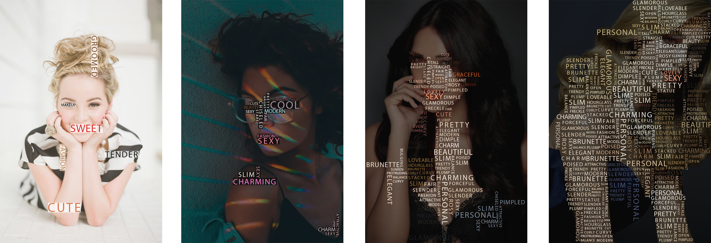
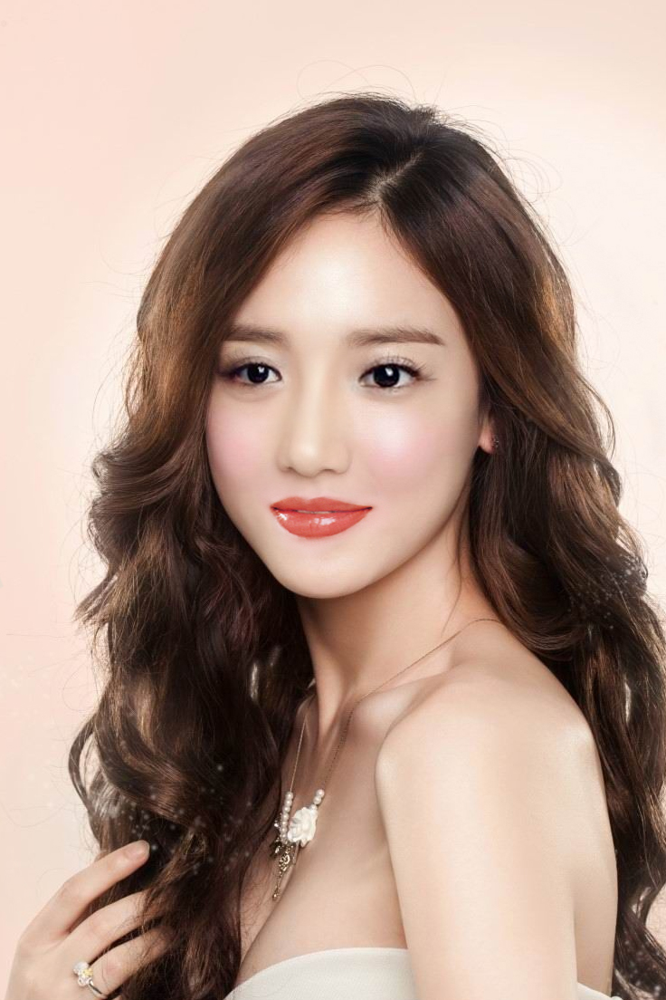
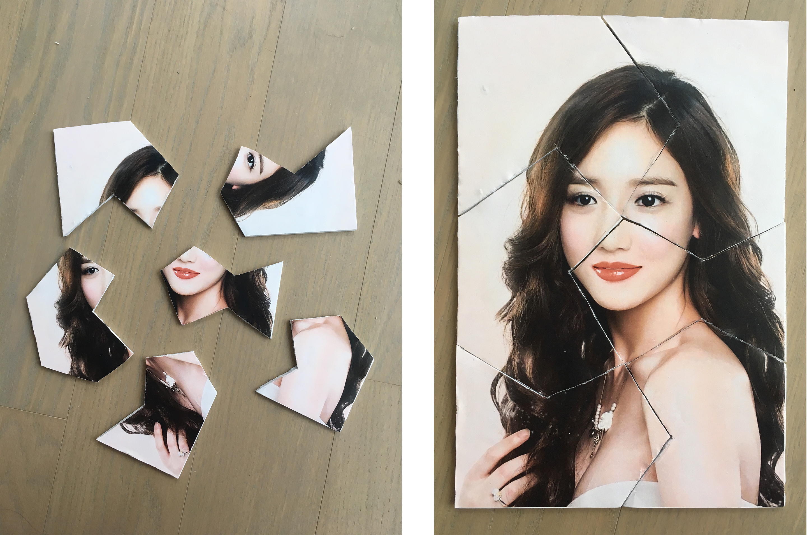

For my 2D project, I want to use my project to show the influence and constraints on people’s appearance, how their faces, makeups, clothes and styles of clothes change and tend to be similar with others.
I made a set of posters, chose four photos of women from their natural condition to unnatural commercial photography pictures, and put tags and words that may influence them on their faces and bodies, showing how much influence and constraints they have and how less we can see about themselves.
For 3D project, I chose four pictures of four different beautiful lady and combined their faces, making it still young and beautiful.
I chose their face, eyes, nose and mouth from these four pictures and combine them into one person which is still beautiful. Then I printed it and made a puzzle of this picture, showing that the face is seperate and broken, lacking their own personalities.
